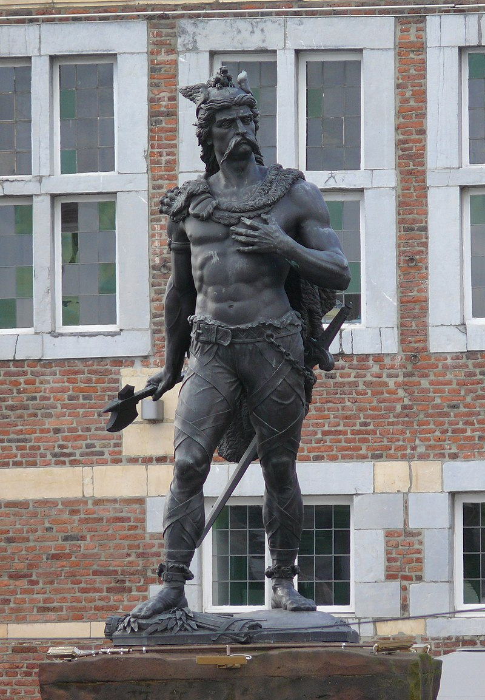

Ambiorix
Het centrale plein van Tongeren wordt gevormd door de Grote Markt en het Stadhuisplein. In het midden van de Grote Markt bevindt zich het standbeeld van Ambiorix. Dit standbeeld van de hand van Jules Bertin werd in 1866 ingehuldigd door koning Leopold II en zijn echtgenote koningin Marie Henriëtte. Op de plaats van het standbeeld stond voorheen het perroen dat verhuisde naar Plein, een plein aan de zuidzijde van de Grote Markt. Het Stadhuisplein wordt aan de oostzijde geflankeerd door de toren van de Onze-Lieve-Vrouwebasiliek. Aan de zuidzijde van dit plein bevindt zich het stadhuis van Tongeren dat werd opgetrokken in 1737. Tijdens de Tweede Wereldoorlog werd de huizenrij die tussen de Grote Markt en het Stadhuisplein stond, gebombardeerd waardoor sindsdien beide pleinen een geheel vormen
Romeinse Muur
 De eerste stenen Romeinse omwalling van
Tongeren werd gebouwd tijdens het keizerschap van Trajanus aan het begin van de 2e eeuw.
Deze omwalling had een lengte van 4544 m, een dikte van 2,10 m en werd langs de buitenzijde
beschermd door één tot drie V-vormige verdedigingsgrachten.Het is opvallend dat de omwalling
van Tongeren ruim 500 m langer was dan de omwalling van Colonia Claudia Ara Agrippinensium,
de hoofdplaats van de provincie Germania Inferior waartoe ook Tongeren behoorde. Aangezien de
omwalling opgetrokken werd tijdens een periode van relatieve rust, was dit bouwwerk veeleer een
statussymbool dan een verdedigingswerk. Bij de bouw van de omwalling werd gebruikgemaakt van
silex voor de kern en zandsteen voor de bekleding. In latere eeuwen werd de bekleding van de
omwalling gebruikt als bouwmateriaal voor andere gebouwen. De delen van de Romeinse muur die
nu nog zichtbaar zijn tonen enkel de kern van silex.
Van deze omwalling is nog zo'n 1500 m zichtbaar.
De eerste stenen Romeinse omwalling van
Tongeren werd gebouwd tijdens het keizerschap van Trajanus aan het begin van de 2e eeuw.
Deze omwalling had een lengte van 4544 m, een dikte van 2,10 m en werd langs de buitenzijde
beschermd door één tot drie V-vormige verdedigingsgrachten.Het is opvallend dat de omwalling
van Tongeren ruim 500 m langer was dan de omwalling van Colonia Claudia Ara Agrippinensium,
de hoofdplaats van de provincie Germania Inferior waartoe ook Tongeren behoorde. Aangezien de
omwalling opgetrokken werd tijdens een periode van relatieve rust, was dit bouwwerk veeleer een
statussymbool dan een verdedigingswerk. Bij de bouw van de omwalling werd gebruikgemaakt van
silex voor de kern en zandsteen voor de bekleding. In latere eeuwen werd de bekleding van de
omwalling gebruikt als bouwmateriaal voor andere gebouwen. De delen van de Romeinse muur die
nu nog zichtbaar zijn tonen enkel de kern van silex.
Van deze omwalling is nog zo'n 1500 m zichtbaar.